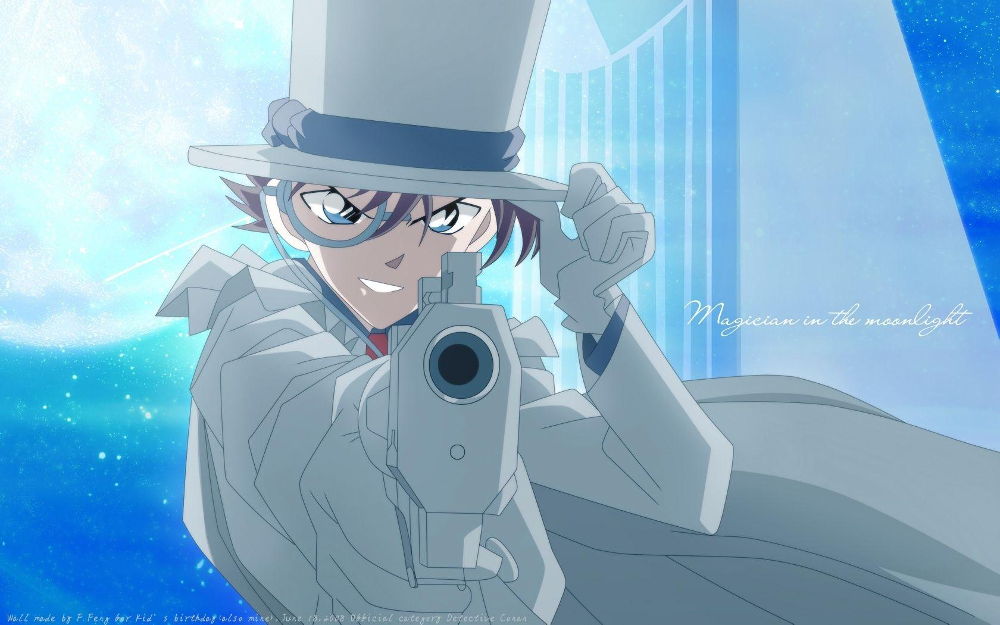
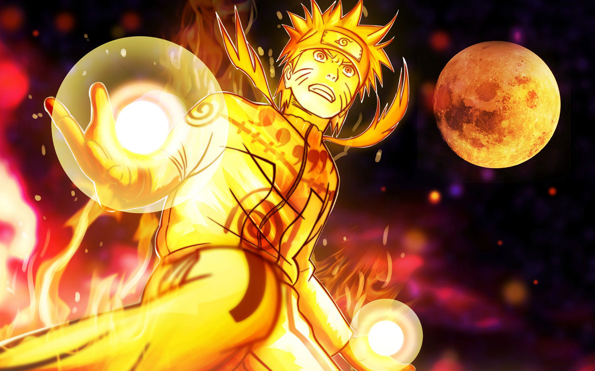
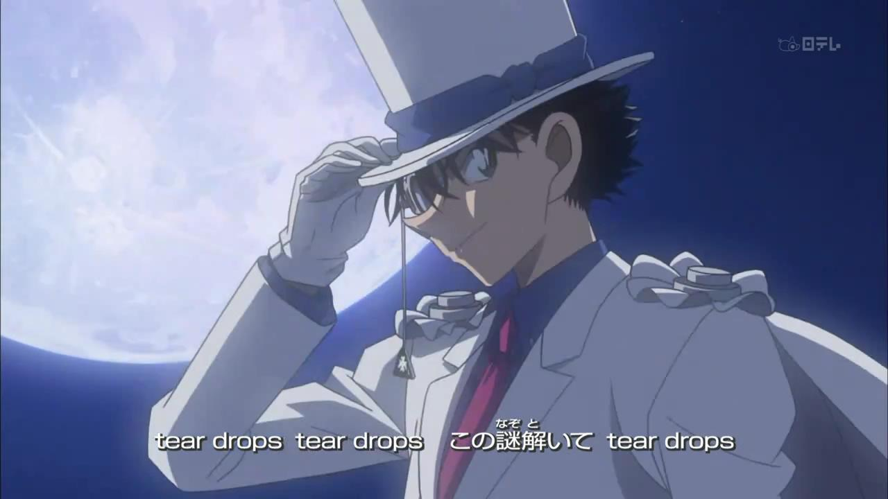
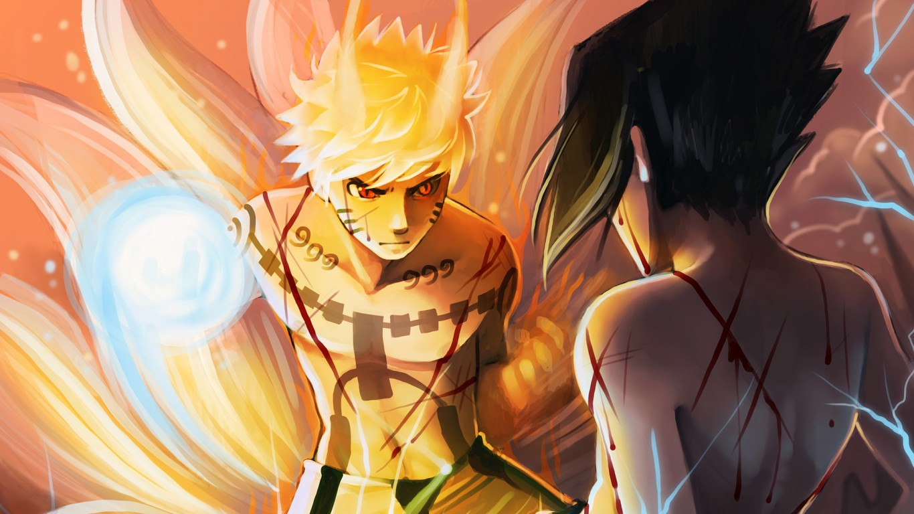
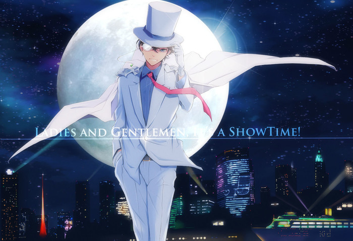
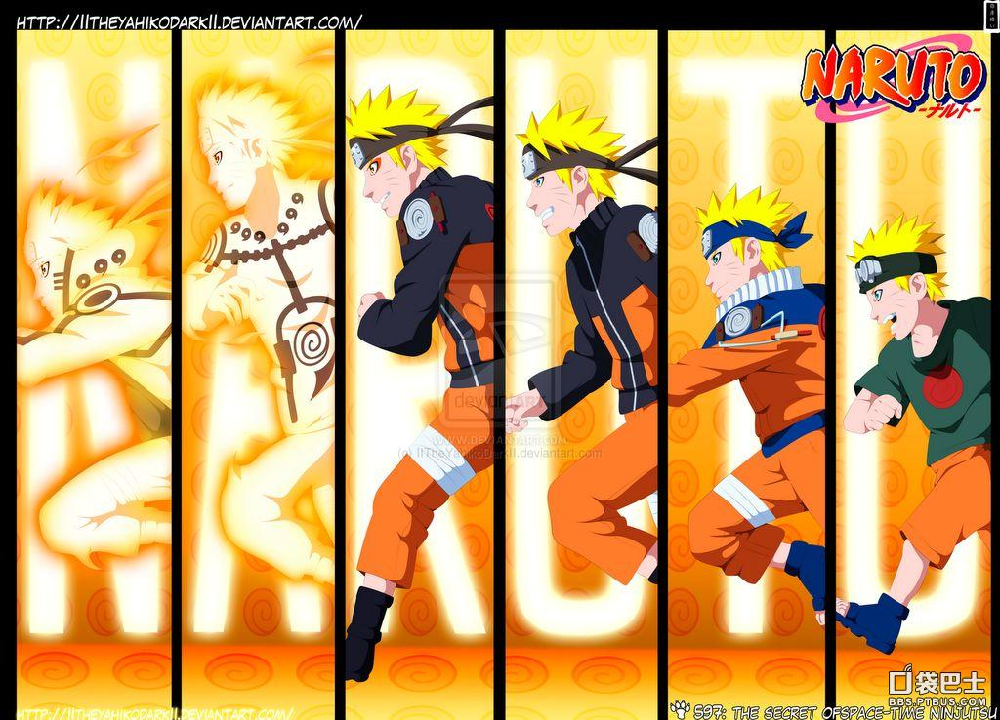
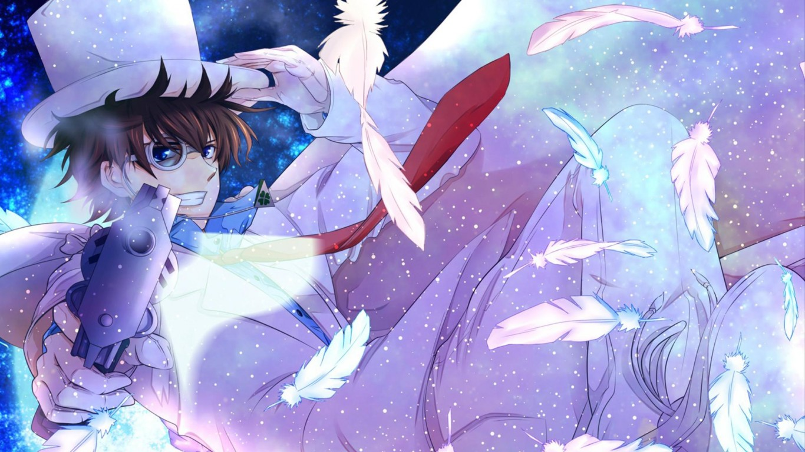
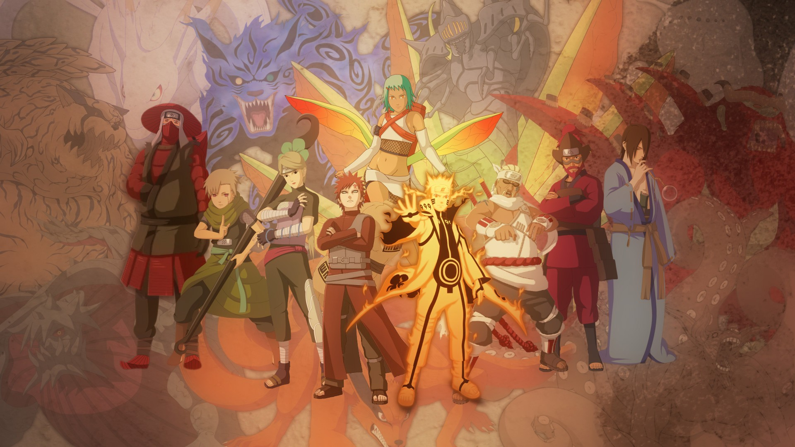

怪盗基德
世纪末的魔术师
《名侦探柯南：世纪末的魔术师》是日本东宝公司于1999年4月17日出品的一部动画电影。 该作是动画片《名侦探柯南》剧场版的第三部。由儿玉兼嗣、山本泰一郎联合执导。高山南、山崎和佳奈、神谷明等人担任 主要配音。 该片主要围绕着罗马诺夫王朝的秘宝“记忆彩蛋”意外的在日本发现，柯南与老对手怪盗基德、以及神秘第三方之 间对彩蛋展开的争夺战。
罗曼诺夫王朝的皇室秘宝－回忆彩蛋，将在大阪铃木财团美术馆内展出的同时，怪盗KID寄出“犯案预告信”准备夺取这无价的皇家艺术之宝， 於是铃木会长要求小五郎协助警方侦查，以防彩蛋被窃取。柯南一行人来到大阪，遇到服部平次，便一同侦查此案。在美术馆遇到了苏联大 使馆的书记、珠宝美术商、罗马王朝研究家、职业摄影师等人。看完彩蛋，大家便解读预告信线索，不料将时间、地点都解读错误。而KID窃听 到彩蛋被转移了。在疏於防备的情况下，KID 成功地找到了回忆彩蛋虽然柯南已经发现了KID的行动，看还是晚了一步。KID在逃离途中，却 被神秘的杀手狙击，坠海失踪，生死不明。 柯南以新型滑板追踪，夺回彩蛋。
火影忍者
火影忍者博人传
《火影忍者剧场版：博人传》是由日本东宝发行的剧场版动画。该片由山下宏幸任导演，岸本齐史任编剧， 三瓶由布子、菊池心、竹内顺子、杉山纪彰等主要声优出演，于2015年8月7日在日本上映。该影片是《火影忍者》的第11部剧场版作品， 围绕着漩涡鸣人和宇智波佐助一代忍者的后辈在经历历练、突破重重困难中成长并且和父辈一起战胜新的敌人大筒木桃式和大筒木金式的故事。 
动漫主角：
- 漩涡博人
- 漩涡鸣人
- 宇智波佐助
- 宇智波佐良娜
动漫美图
美图一
美图二
美图三
美图四
美图五
美图六

请为你喜欢的动漫投上一票
人气动漫
人气动漫
- 火影忍者
- 秦时明月
- 名侦探柯南
下面是小伙伴对比较好看的动漫的详细报表~~~
| 姓名 | 喜爱动漫 | 操作 |
| 小南 | 火影忍者 | 投票 |
| 小航 | 秦时明月 | 投票 |
| 小丹 | 秦时明月 | 投票 |
| 小月 | 火影忍者 | 投票 |
| 小乐 | 火影忍者 | 投票 |
| 总计 | 5 | |